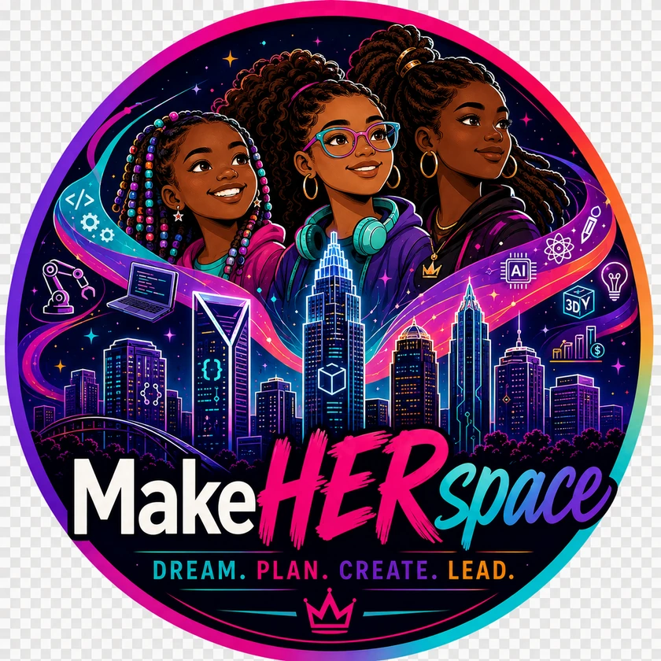
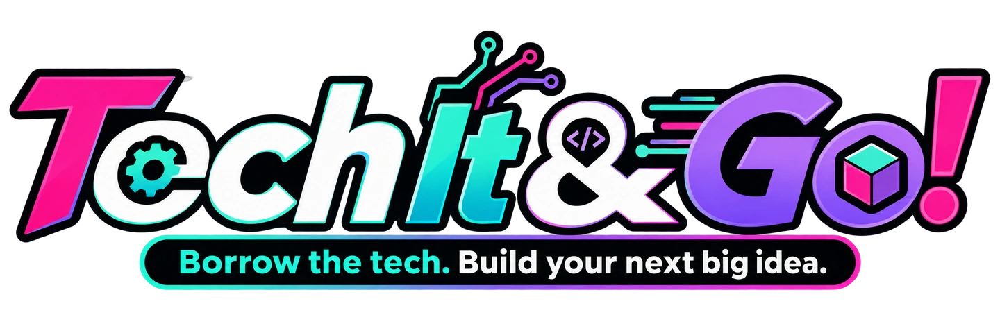

Full-stack development
React, JavaScript, TypeScript, Node.js, Express, databases, APIs, Git and GitHub.
MAKEHERSPACE INCORPORATED / A CITY OF POSSIBILITY
Leadership · Libraries · Technology · Community
I build pathways to opportunity.
Libraries, MakeHERspace, Nexus and purposeful software connect my work in learning, leadership and making.
MY INTERACTIVE PORTFOLIO
01 / THE PORTFOLIO
Choose a building in the city or browse the portfolio below. Each door opens a different part of my work.
02 / DEGREES & RESEARCH
My education connects organizational leadership, information access, communications and journalism. Research becomes a tool for creating practical change.
React, JavaScript, TypeScript, Node.js, Express, databases, APIs, Git and GitHub.
Organizational Leadership
Library and Information Science
Communication and Media Studies
Applied Arts in Journalism Technology
04 / SELECTED LEADERSHIP
As Director of Youth Services, I connected youth-services operations, staff development, community partnerships and strategic planning. My work advanced One City, One Library with Worcester Public Schools and included planning and managing operations at two new branches.
ALA recognized me among the 2015 Summer Teen Intern Grant recipients. Contemporary coverage also connected my youth-services work to Worcester’s reading initiative.
Helped secure and implement the $100,000 Making Space for Tech @ an HBCU grant. As makerspace project manager and instructional technology coordinator, I connected design and fabrication to workforce preparation and community innovation.
The 2018 Maker Conference and 2019 Mini Makerspace Conference brought expert makers, digital fabrication and hands-on learning into the university community.
Read the institutional feature05 / MY CONNECTED WORK
My work begins with access: helping people find information, build confidence and use technology. MakeHERspace brings that purpose into community programs. Nexus extends the learning online. Tech It & Go! applies my library and makerspace experience to a technology lending system.

Founded by Dr. Chantell McDowell
Learning · Making · Leadership
MAKEHERSPACE NEXUS / LEARNING INTO PRACTICE
MakeHERspace Nexus connects course pathways, applied labs, educator resources and career preparation. It carries my experience in libraries, youth services and makerspaces into a digital learning environment.
Nexus opens on its own platform and currently requires sign-in. For equipment access and a software case study, continue to Tech It & Go!.
Web development, AI, cybersecurity, game development and digital storytelling.
3D printing, design, CNC, vinyl, apparel, sublimation and hands-on prototyping.
Mentorship, career readiness, innovation and turning ideas into opportunities.
06 / SOFTWARE & APPLIED ACCESS
FEATURED PROJECT / PER SCHOLAS CAPSTONE

Tech It & Go! is my technology lending library for educators, makerspaces, nonprofits and learners. It brings my experience with information access and hands-on tools into a React, Express and MongoDB application.
THE EXPERIENCE I BUILT
Explore the source and presentation. The live lending application is available at Tech It & Go!.
RECORDED VOICE / 7 MINUTES
Dr. Chantell McDowell · Per Scholas Software Engineering
project.owner === user.id
access: authorizedA project-and-task REST API with authentication and ownership checks.
View repositorynotes.find({ user: user.id })
private by ownershipA notes API connecting each record to its owner and protecting private operations.
View repository07 / PRESS & PUBLIC RECOGNITION
Original coverage, institutional announcements and published records.
08 / LET’S CONNECT
Leadership opportunities. Speaking engagements.
Technology projects. Community partnerships.